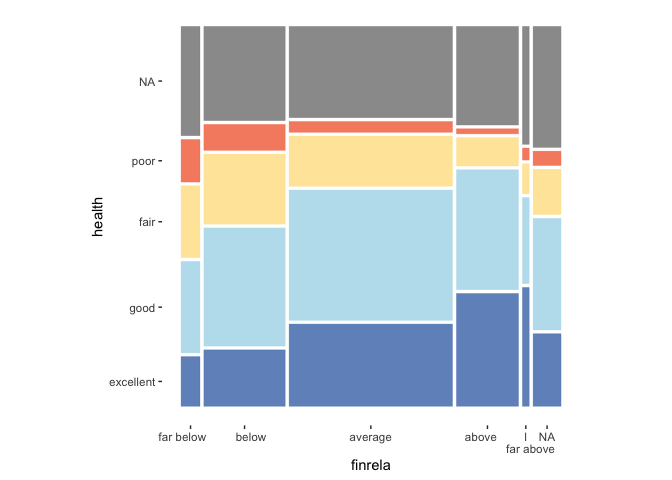

ggmosaic was designed to create visualizations of categorical data and is capable of producing bar charts, stacked bar charts, mosaic plots, and double decker plots.
Installation
You can install ggmosaic from github with:
# install.packages("devtools")
devtools::install_github("haleyjeppson/ggmosaic")Example
library(ggmosaic)
library(dplyr)
happy %>%
mutate(finrela = forcats::fct_recode(finrela,
"far below " = "far below average",
" below" = "below average",
"average" = "average",
"above " = "above average",
"l\n far above" = "far above average")) %>%
ggplot() +
geom_mosaic(aes(x = product(finrela), fill=health), show.legend = FALSE) +
theme_mosaic() +
scale_fill_manual(values = c("#4575B4", "#ABD9E9", "#FEE090", "#F46D43"))
geom_mosaic: setting the aesthetics
In geom_mosaic(), the following aesthetics can be specified:
weight: select a weighting variable-
x: select variables to add to formula- declared as
x = product(var2, var1, ...)
- declared as
-
alpha: add an alpha transparency to the selected variable- unless the variable is called in
x, it will be added to the formula in the first position
- unless the variable is called in
-
fill: select a variable to be filled- unless the variable is called in
x, it will be added to the formula in the first position after the optionalalphavariable.
- unless the variable is called in
-
conds: select a variable to condition on- declared as
conds = product(cond1, cond2, ...)
- declared as
These values are then sent through repurposed productplots functions to create the desired formula: weight ~ alpha + fill + x | conds.
Version compatibility issues with ggplot2
Since the initial release of ggmosaic, ggplot2 has evolved considerably. And as ggplot2 continues to evolve, ggmosaic must continue to evolve alongside it. Although these changes affect the underlying code and not the general usage of ggmosaic, the general user may need to be aware of compatibility issues that can arise between versions. The table below summarizes the compatibility between versions.
| ggmosaic | ggplot2 | Axis labels | Tick marks |
|---|---|---|---|
| @93e5840 | 3.3.4 | x | x |
| 0.3.3 | 3.3.3 | x | x |
| 0.3.0 | 3.3.0 | x | x |
| 0.2.2 | 3.3.0 | Default labels are okay, but must use scale_*_productlist() to modify |
No tick marks |
| 0.2.2 | 3.2.0 | Default labels okay, but must use scale_*_productlist() to modify |
x |
| 0.2.0 | 3.2.0 | Default labels are wrong, but can use labs() to modify |
x |